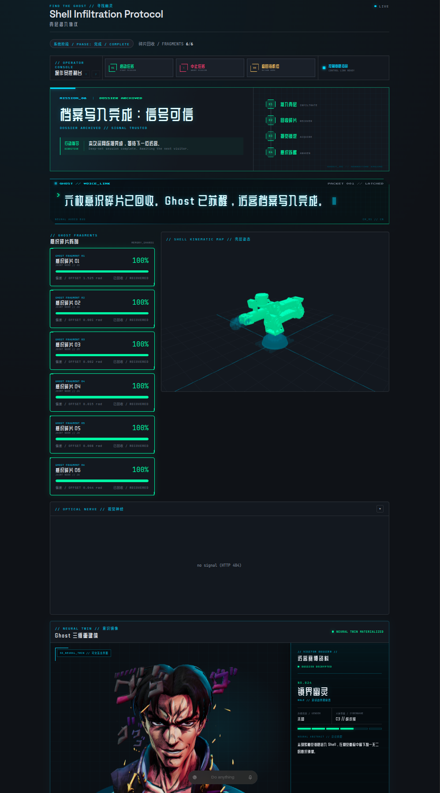

寻找 Ghost FIND THE GHOST
机械臂陷入沉睡。观众用手扮动六个关节，寻找隐藏的角度。每找到一枚意识碎片，那个关节便从柔软变得坚定。
TOUCH → TRUST01
一场从触觉、凝视到数字分身的机械臂互动叙事。
我们不只让机器完成任务，而是让人类安全地走进它的感知与控制回路。
机械臂陷入沉睡。观众用手扮动六个关节，寻找隐藏的角度。每找到一枚意识碎片，那个关节便从柔软变得坚定。
六枚碎片归位，视觉神经接管。末端相机寻找面孔、对准凝视，绕行打量，仿佛机器第一次意识到“你”。
张开手掌，近一步，Ghost 便后退；退一步，它便向你探来。同时，你的赛博档案与 3D 意识镜像正在后台生成。
观众直接成为控制回路的一部分。低阻尼提供可回驱的自由；命中区间 + 0.3 s dwell 排除偶然穿越；阻抗刚度平滑爬升，给出可感知的“找到了”。

FULL SYSTEM UI // CLICK TO EXPAND这不是预先渲染的视频。关节命中、机械臂姿态、相机画面、TTS 字幕、生成进度、3D 模型与观众档案都由 ROS 2 运行状态实时驱动。
阶段状态、六枚 Ghost 碎片、启动/中止/归位，以及实时机械臂 3D 姿态汇聚在主控制台。
人脸与手势检测画面按游戏阶段切换，让观众看见机器此刻如何感知和锁定目标。
Tripo GLB 作为主视图，FLUX 风格画与 DeepSeek 赛博档案同步组成观众的数字分身。
游戏逻辑不在实时环里频繁切换电机模式。它只更改每个关节的平衡位置、刚度和阻尼；C++ 控制器在固定周期内完成重力补偿、边界整形与 MIT 命令下发。
统一感知节点选择画面中最大可见人脸，扩展为完整头部 crop。bbox 面积过滤远距离观众，空间稳定 + dwell 防止误锁；J5/J4 在边界内连续对准视觉轴。
只选最大张开手掌，并将 RGB 手心与 Orbbec 对齐深度匹配。建立中性距离后，前推使机械臂后退，后撤使它前探；水平位置同时驱动 J5 视线跟随。
经过面积、稳定性和视觉轴居中验证的原始完整头部图像。
直接读取原始 crop，生成行动代号、角色定位、义体等级与意识摘要。
保留身份几何与原有配饰，仅通过光影、色彩和背景赋予赛博视觉。
经过 schema 验证、字段规则与截断修复，在 Web 中实时解密。
风格画上传、异步轮询生成任务，返回带 PBR 材质的 GLB 模型。
GLB 缓存、校验与自动取景；3D 主视图 + FLUX 画中画 + 右侧赛博档案。
不伤害，也不因不作为让人受到伤害。
ENGINEERING: PERCEPTION + FORCE BOUNDARY理解人的意图并响应，但永远受更高安全约束限制。
ENGINEERING: INTENT + BOUNDED COMPLIANCE在不冲突前两条的前提下保持自身运行与系统可恢复。
ENGINEERING: LIMITS + HOLD + FALLBACK面向科技馆、品牌展陈、教育与创意零售。把柔顺触感、人体感知和故事引导组合成一套可复用交互引擎。
以低自由度柔性机构承载屏幕或相机，用凝视、身体方向和手势构建“它正在看你”的存在感。
将 MIT 常驻输出、阻抗/阻尼链、无冲击切换和安全整形抽象为 ROS 2 可复用控制栈，服务协作机械臂与互动硬件。
当机器人走出围栏，
它需要的不只是更强的任务能力，
还要有理解人、避让人、柔和地回应人的能力。
《寻找 Ghost》想表达的是：人机共生不从更高的速度开始，它从一个安全、可理解、可退让的接触开始。